Empire romainwiki-fr
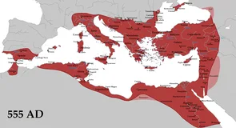
Empire byzantinmemo:civilisations
Empire ottomanmemo:civilisations
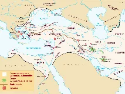
Empire perse achéménidememo:civilisations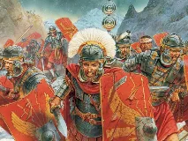
Empire parthebing
Empire sassanidebing
 Dynastie Qinwiki-fr
Dynastie Qinwiki-fr
Dynastie Hanmemo:civilisations
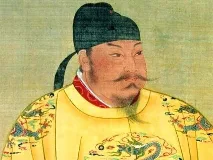
Dynastie Tangwiki-fr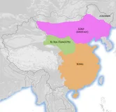
Dynastie Songwiki-fr
Dynastie Mingbing
 Dynastie Qingbing
Dynastie Qingbing Empire mongolECHEC
Empire mongolECHEC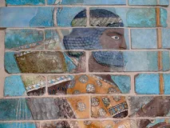
Empire mogholmemo:civilisations
Empire mauryamemo:civilisations
Empire GuptaECHEC
Califat omeyyadebing
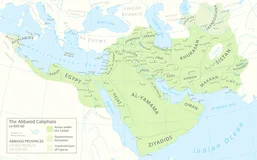
Califat abbassidememo:civilisations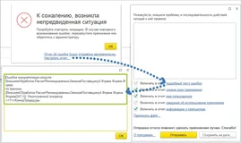
Empire aztèqueECHEC Empire incaECHEC
Empire incaECHEC
Civilisation mayaECHEC
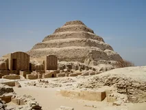
Ancien Empire egyptienwiki-fr
Moyen Empire egyptienbing
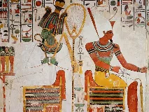
Nouvel Empire egyptienbing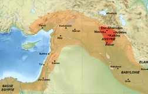
Empire assyrienwiki-fr
Empire babylonienbing
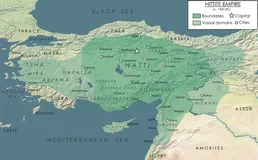
Empire hittitewiki-en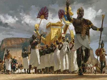
Royaume de Koushbing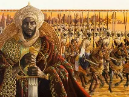
Empire du Malimemo:civilisations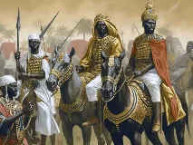
Empire songhaïbing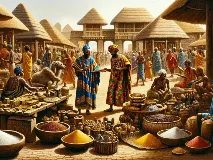
Empire du Ghanabing Empire zouloubing
Empire zouloubing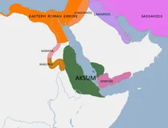
Empire d'Aksoummemo:civilisations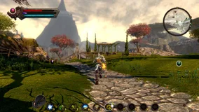
Empire khmerbing
Shogunat Tokugawabing
 Empire britanniquewiki-fr
Empire britanniquewiki-fr
Empire espagnolbing
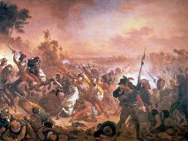
Empire portugaiswiki-fr
Empire colonial françaiswiki-fr
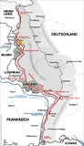
Empire russebing Saint-Empire romain germaniquewiki-fr
Saint-Empire romain germaniquewiki-fr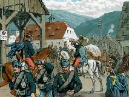
Empire austro-hongroisbing